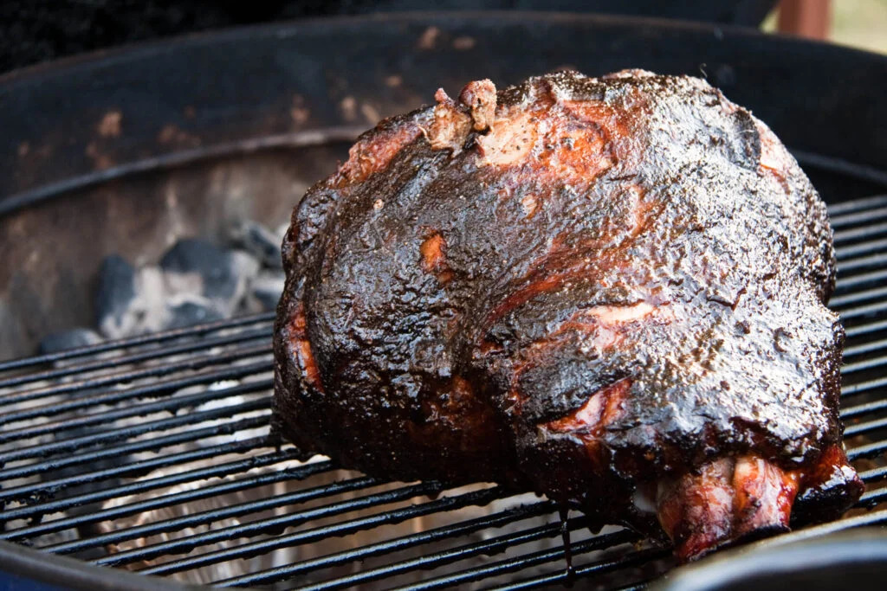

Return to Home
Pulled Pork

Description
Do you have a smoker on-hand? Of course you do! We've got
a pulled pork butt recipe for you! Hosting a Super Bowl
party? Trying to impress your father-in-law? Saturday
in with the boys? No worries, we've got you covered.
Ingredients
- One 13 lbs bone-in pork butt
- Binder (we prefer yellow mustard)
- Seasoning of choice
- Sauce of choice
Directions
- Set your smoker to 250 degrees F.
- While the smoker is pre-heating, trim some overhanging or excess fat form the pork butt.
- Slather your binder onto the pork.
- Liberally season whole surface of the pork. Let stand 5-10 min until seasoning is "wet".
- Once preheated, place pork butt onto smoker fat-side down. Let smoke until desired bark is achieved.
- If you want to wrap, now is the time. Otherwise, continue cooking until internal temp reaches 203 and pork is probe-tender.
- Remove pork from moker, let sit 30-60 min to cool.
- Shred. Toss in the sauce of your choice until evenyl coated but not sopping wet.
- Enjoy!